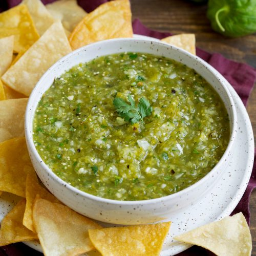

Go Back
Salsa Verde

A great salsa recipe that takes 20 minutes max to chef up and goes great on carne asada
Ingredients
- 6 Tomatillos
- 1 Jalapeno
- 1 White Onion
- 1/2 of an Avocado
- 3 cloves of garlic
- Cilantro
Creation
- Char the tomatillos, jalapeno and onion in the oven till dark
- Blend the charred ingredients until chunky then add the garlic and cilantro
- Add avocado till smooth and homogenous
- Enjoy